Et udpluk af opgaver jeg har afsluttet i Nordsjælland og omegn. Både private haver, sommerhuse og erhvervsopgaver – hvert projekt har sin egen historie.
Da Solrød Kommune skulle have opdateret arealerne omkring rådhuset, blev det til et projekt med genbrugsbrosten, corten-stål og et stort staudebed som blikfang.
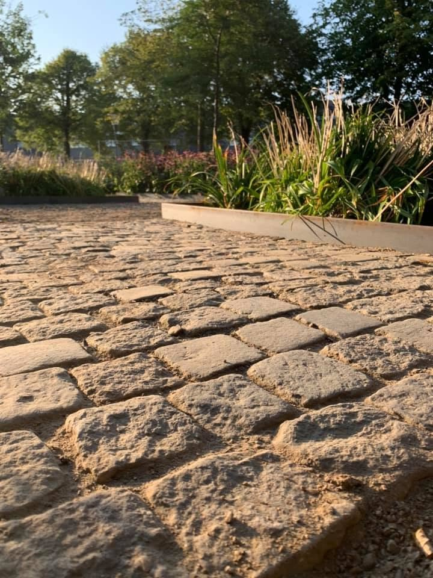
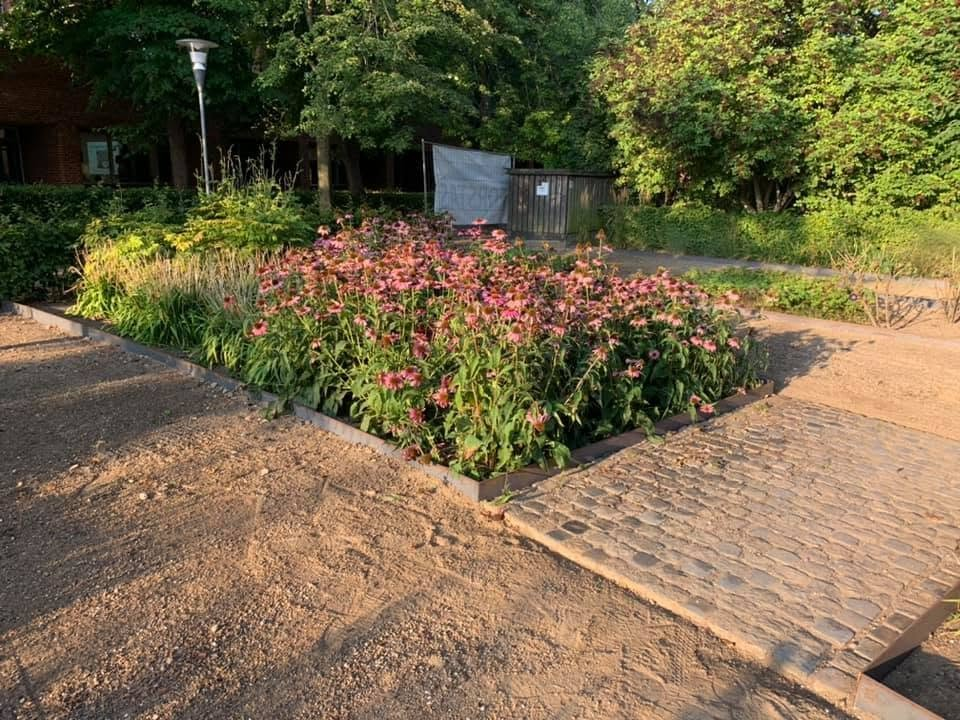
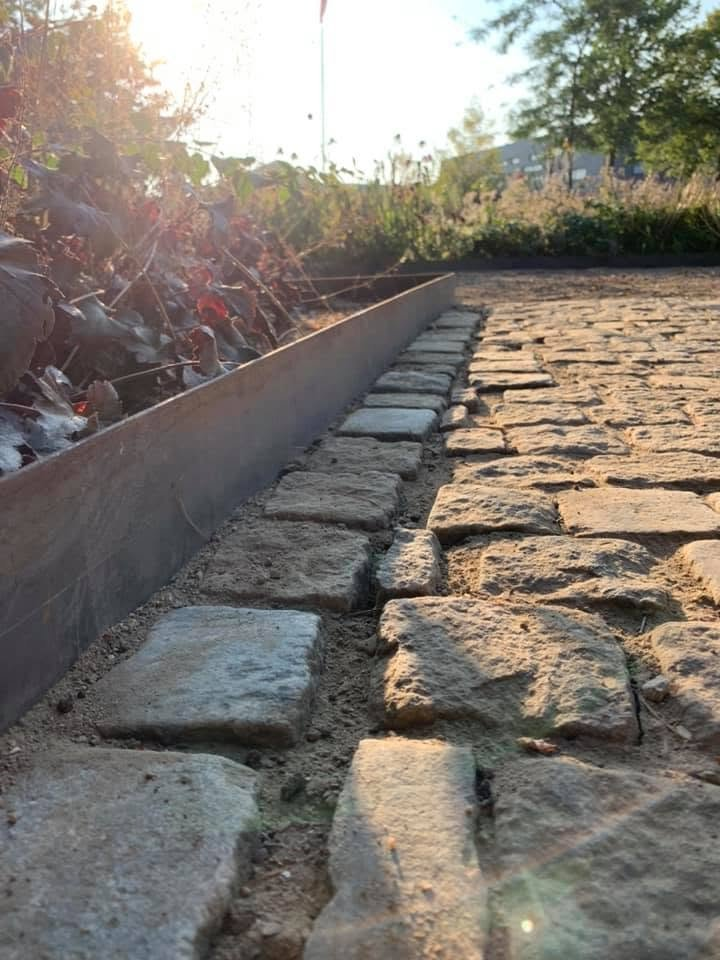
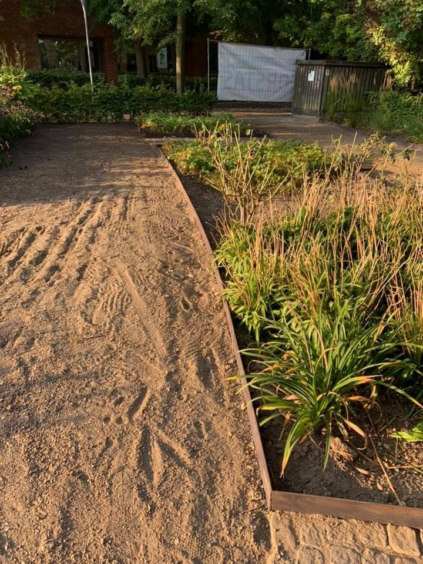
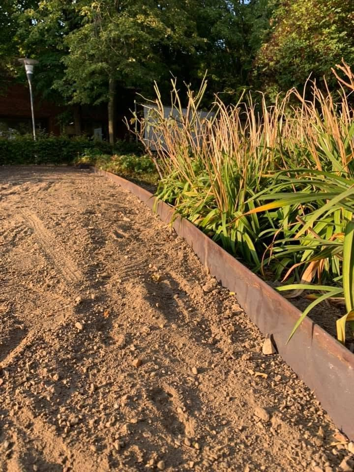
Arealerne omkring Solrød Rådhus trængte til et løft. Den gamle belægning var slidt, kanterne skulle strammes op, og der var ønske om et frodigt staudebed der kunne binde det hele sammen – uden at det blev en tung og pasningskrævende løsning.
Jeg valgte at bruge genbrugsbrosten som hovedmateriale. Det giver en varm, tidløs karakter der passer godt til et rådhus, og samtidig er det en bæredygtig løsning fordi stenene får nyt liv. Kanterne blev lavet i corten-stål – et materiale der ruster smukt og skaber en skarp overgang mellem belægning og bed, uden at kræve vedligeholdelse.
Bærelaget blev omhyggeligt forberedt så belægningen kan holde til både gangtrafik og lettere kørsel. Corten-kanterne blev sat i beton for at holde formen præcist over tid. Staudebedet blev tilplantet med echinacea (solhat) og andre planter der giver farve fra sommer til efterår, og som ikke kræver konstant pasning.
Området fremstår nu roligt og indbydende. Belægningen tager sig særligt smukt ud i aftenlyset, hvor stenenes struktur træder frem, og staudebedet står som et levende midtpunkt der ændrer sig med årstiderne.
Et stort sammenhængende projekt ved havet: fra jordarbejde og materialehåndtering til færdige stier og gårdsplads omkring et charmerende rødt sommerhus.
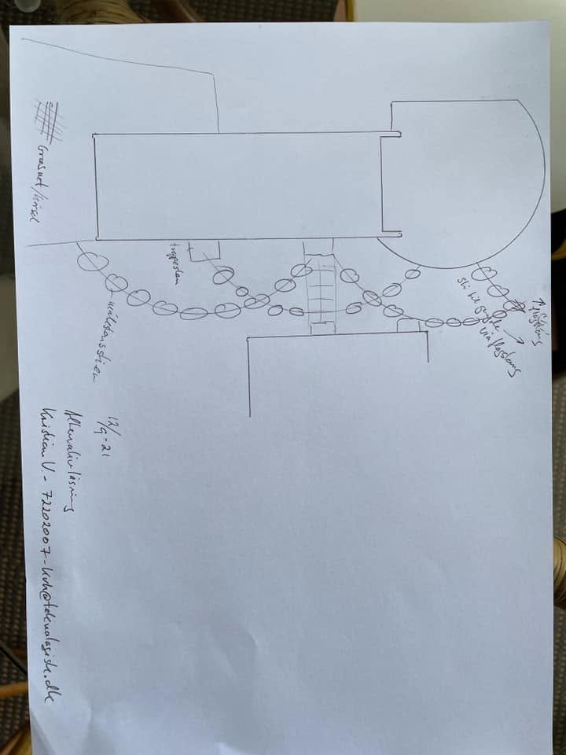
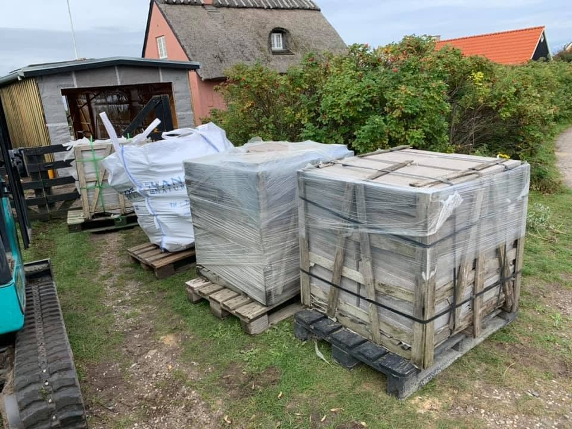
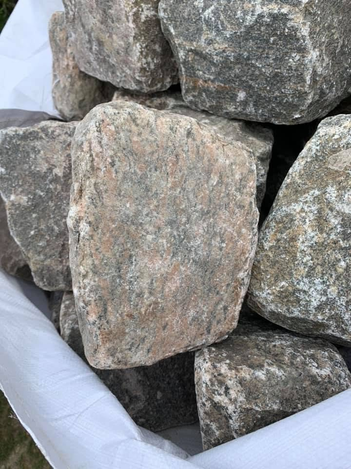
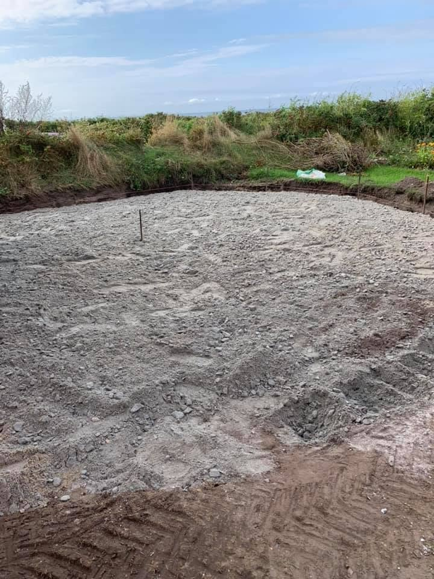
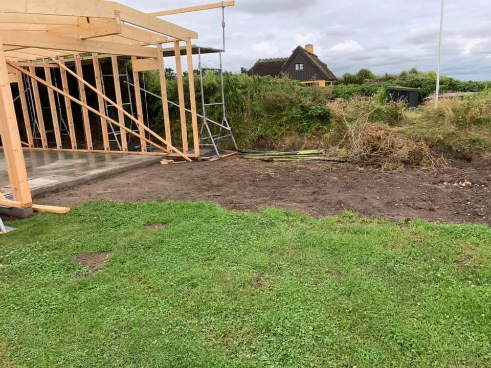
Familien havde købt et charmerende rødt sommerhus i Kikhavn med udsigt over havet. Grunden trængte til en helhedsløsning – der skulle være plads til gæster, plads til at nyde solen, og alle overgange mellem terrasse, sti og græs skulle spille sammen.
Vi startede med en samlet plan for hele grunden. Ved kystnære grunde er drænforholdene ekstra vigtige – vinden og saltet gør noget ved både materialer og planter, og løsningen skulle kunne holde til alle årstider. Jeg tegnede løsningen op, gennemgik den med familien, og vi tog beslutninger sammen om materialer og forløb.
Jeg valgte at kombinere store betonfliser til gangstier med marksten som accentmateriale – det giver et rustikt look der passer til det gamle sommerhus, men samtidig er praktisk at gå på. Bærelaget blev lagt ekstra grundigt, med tanke på at grunden ligger tæt på havet hvor jorden bevæger sig med årstiderne.
Familien har fået en samlet grund der fungerer som et sammenhængende udendørsrum. Materialerne patinerer smukt over tid og passer perfekt til sommerhusets karakter. Det er præcis den slags projekt hvor man kan se hver detalje – både i det færdige resultat og under jorden.
En privat have ved Vedbæk fik en varm, broget naturstensbelægning der binder det hele sammen: en lang havegang langs hækken, en terrasse ved huset og en ny trappe i massiv natursten op til hoveddøren.
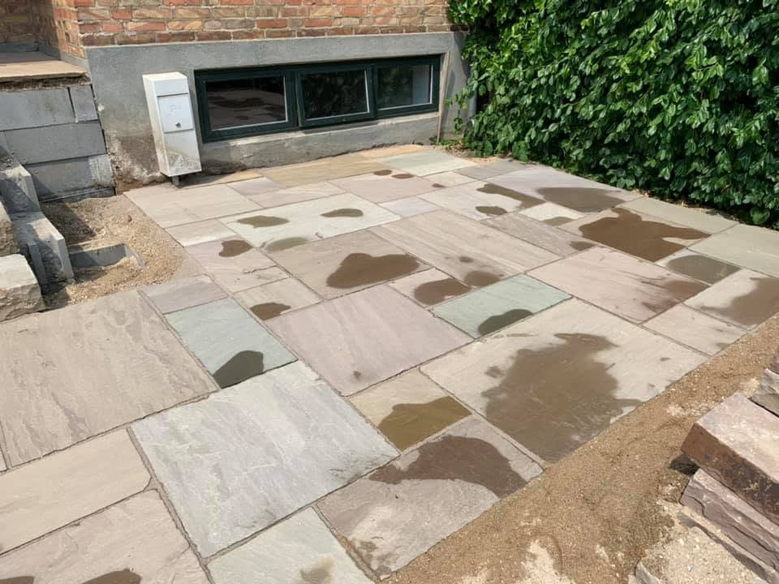
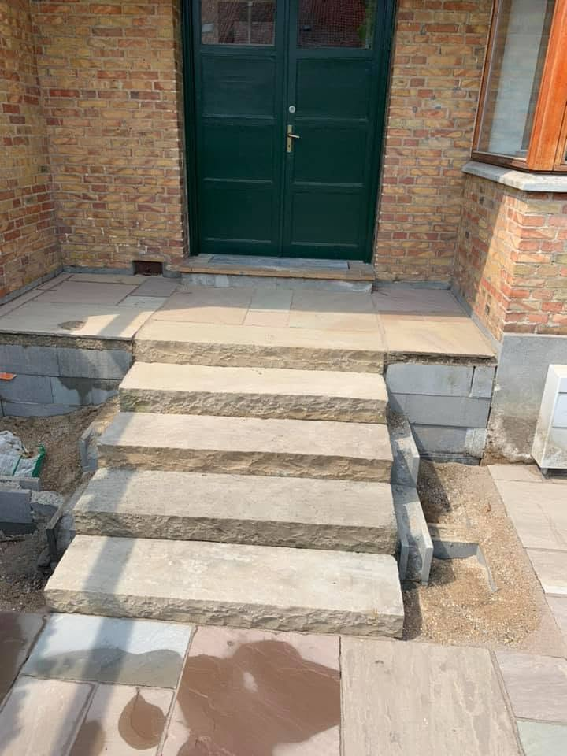
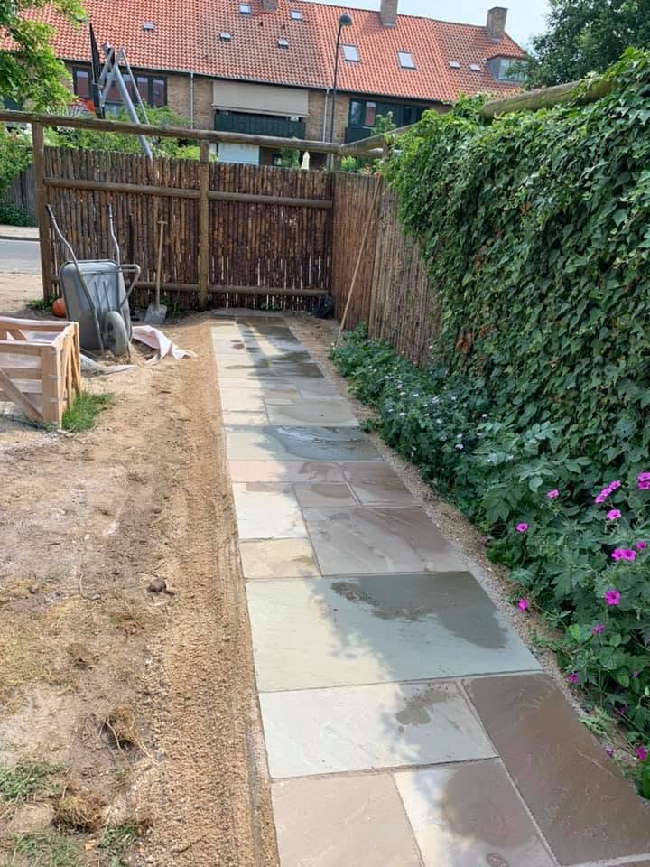
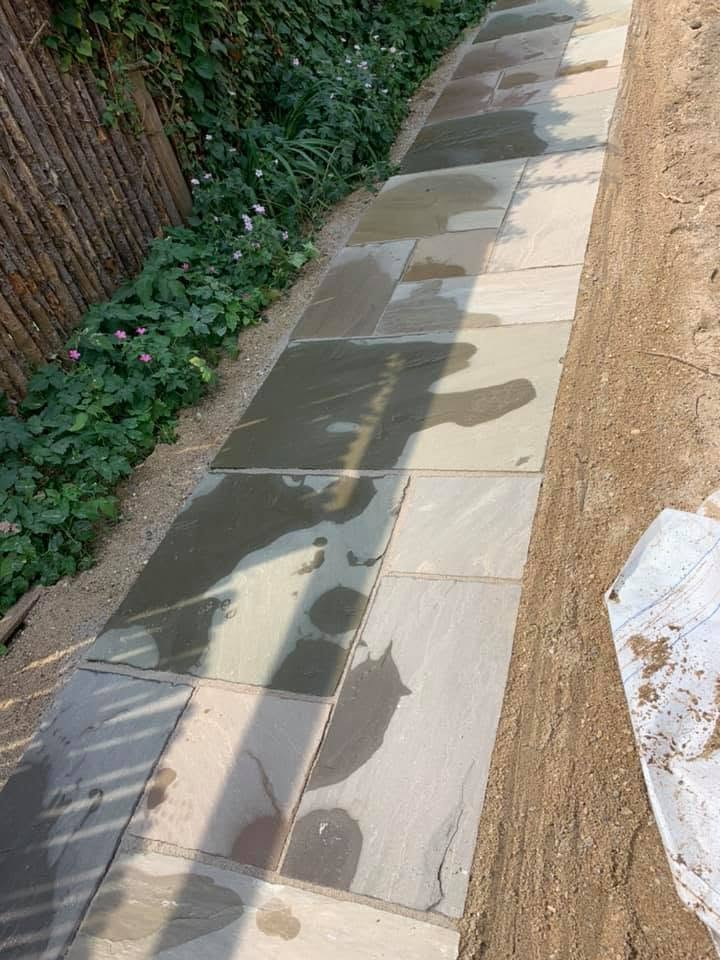
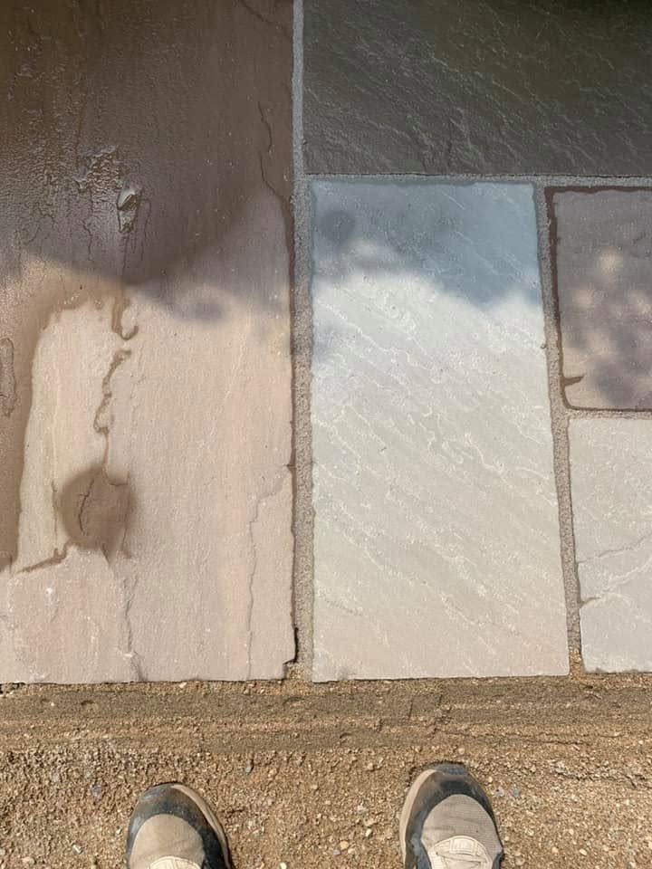
Kunden ønskede at binde haven sammen med ét gennemgående naturstensmateriale – en gang fra vejen ind langs huset, en terrasse at opholde sig på, og en trappe op til hoveddøren der matchede resten. Det skulle føles gedigent og holde i mange år.
Vi valgte en broget sandsten, hvor hver flise har sit eget spil af sand, grå og rustrøde toner. Det er en af de smukkeste naturstenstyper til danske haver, men den kræver at man kender materialet: sandsten skal lægges med det rigtige fald og fuges korrekt, så vand ikke bliver stående. Netop dér ligger forskellen på et resultat der holder, og et der slår revner efter få vintre.
Fliserne blev lagt i et solidt bærelag med fald væk fra huset, så regnvand ledes rigtigt. Trappen blev bygget op i massive naturstenstrin, sat præcist an mod den eksisterende belægning ved døren. Langs hækken blev gangen tilpasset i bredden, så den følger havens linjer i stedet for at skære en hård kant.
Haven har fået et sammenhængende, varmt udtryk, hvor gang, terrasse og trappe spiller sammen. Sandstenen bliver kun smukkere med tiden, og familien har nu et udeareal der både er flot at se på og rart at bruge – uden vedligeholdelsesbøvl.
I en frodig skovhave nær Hornbæk byggede jeg en rund samlingsplads: en cirkel af håndlagte marksten med rustikke træstammebænke omkring et centralt midterfelt.
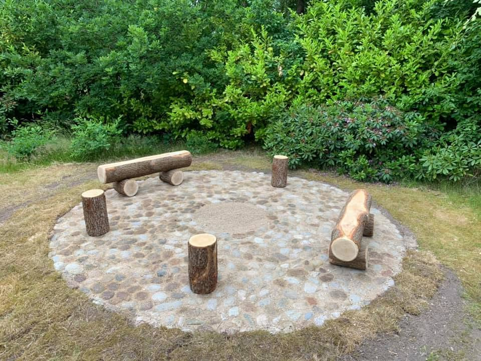
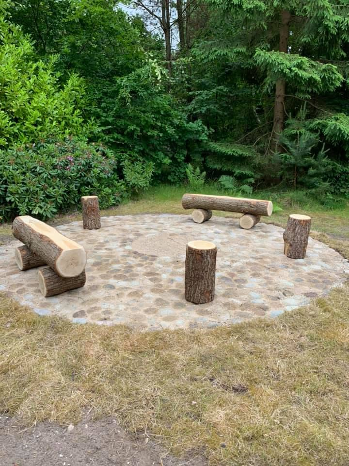
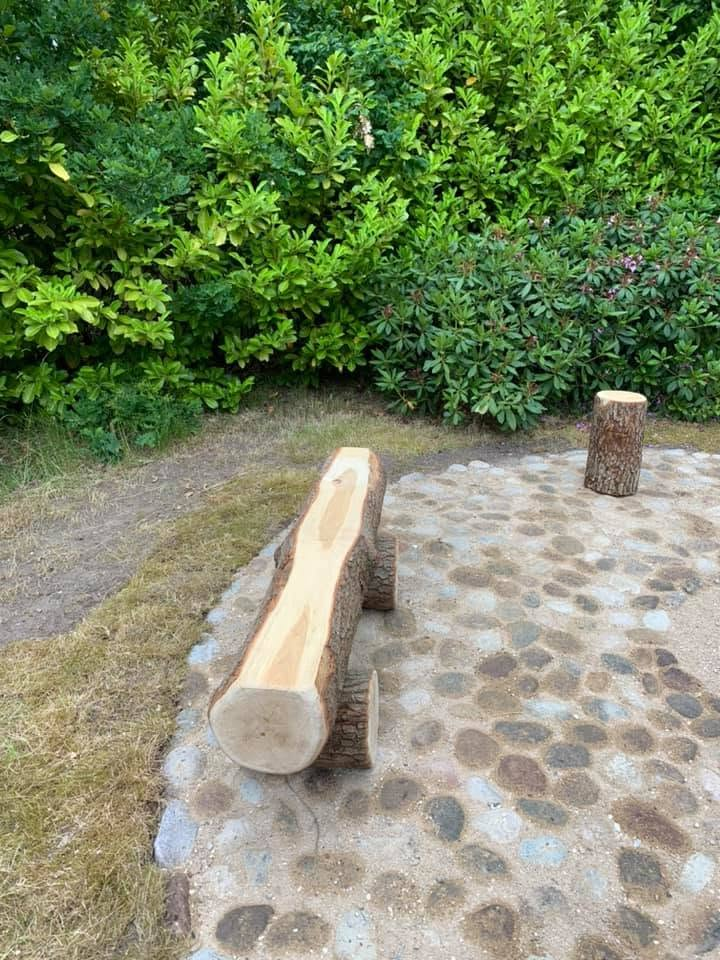
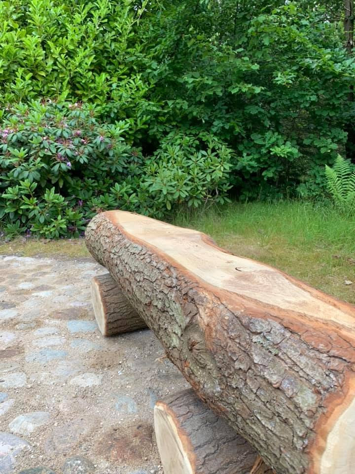
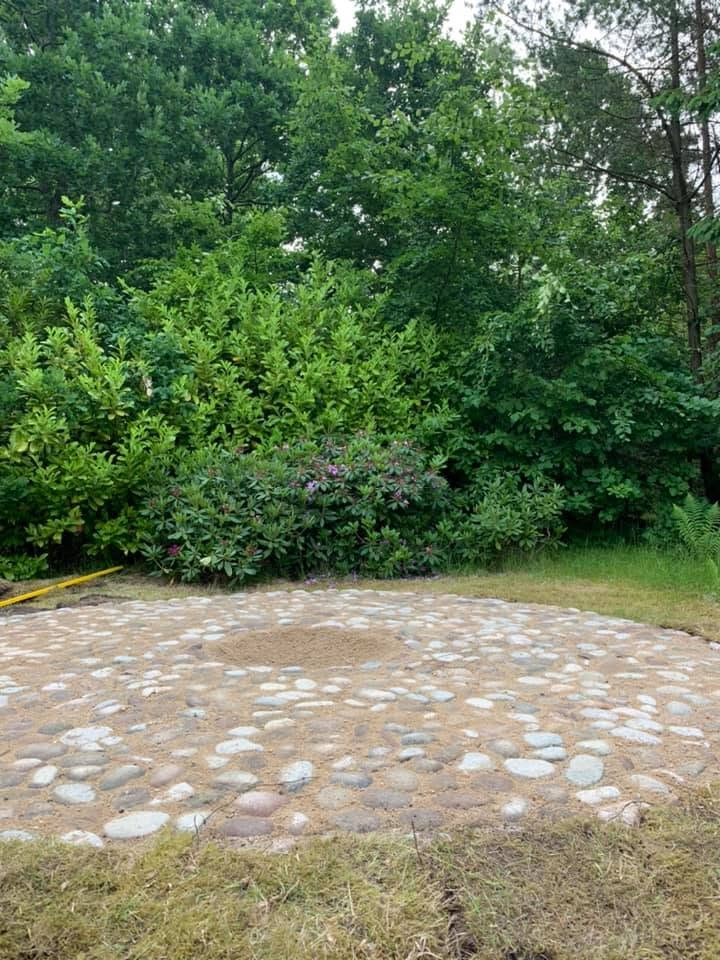
I en frodig skovhave nær Hornbæk ønskede familien et samlingssted – et sted at sidde sammen, tænde bål og nyde omgivelserne. Det skulle falde naturligt ind i den vilde, grønne have og virke som om det altid havde stået der.
Jeg anlagde en rund plads belagt med marksten – de runde, danske kampesten der passer perfekt til en naturhave. Stenene blev lagt i hånden, én ad gangen, i et cirkelmønster. Rundt om pladsen satte jeg bænke og skamler skåret af massive træstammer, så siddepladserne er en del af naturmaterialet frem for et fremmed møbel.
Marksten er tidskrævende at lægge, fordi hver sten er forskellig og skal vendes og pakkes, så fladen bliver stabil at gå på. Bunden blev opbygget med afvanding, så pladsen holder sig fast og ikke skrider, og træstammerne blev sat i niveau, så man sidder godt. Overgangen til græsset blev holdt blød, så cirklen glider ind i haven.
Familien har fået et samlingssted der ser ud som om det er vokset ud af skovbunden. Det er en helt anden type opgave end en indkørsel eller terrasse – og et godt eksempel på, at natursten og håndlagt arbejde kan skabe noget med sjæl, man ikke får med færdige betonelementer.
Vi havde 3 billeder af et flot projekt fra Lynæs (indkørsel i grå betonbrosten + støttemur i L-elementer), men de blev desværre overskrevet ved upload. Christian skal sende dem igen, så bygger vi projektet ind her.
Ring, skriv eller send en henvendelse — jeg vender tilbage inden for 24 timer.
Kontakt mig